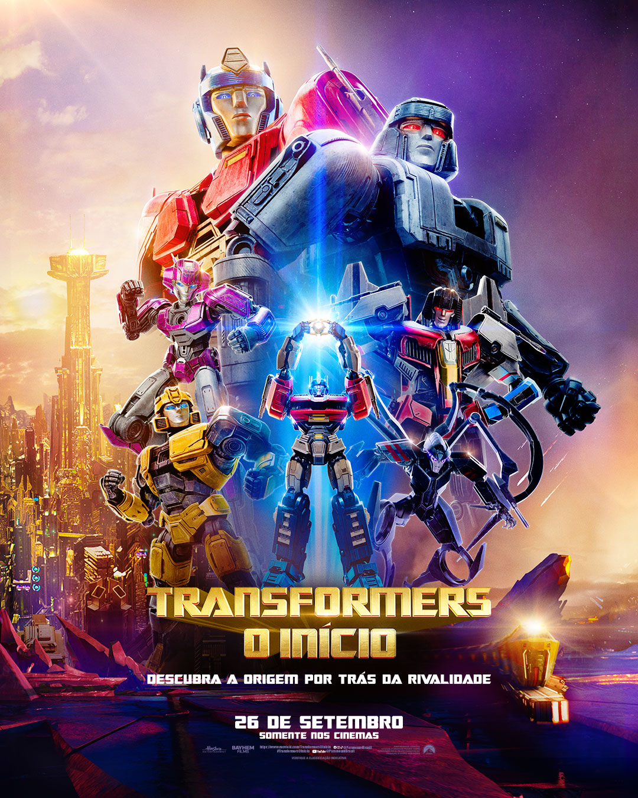
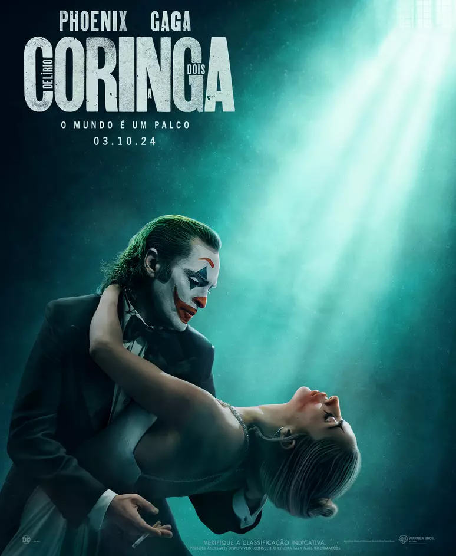
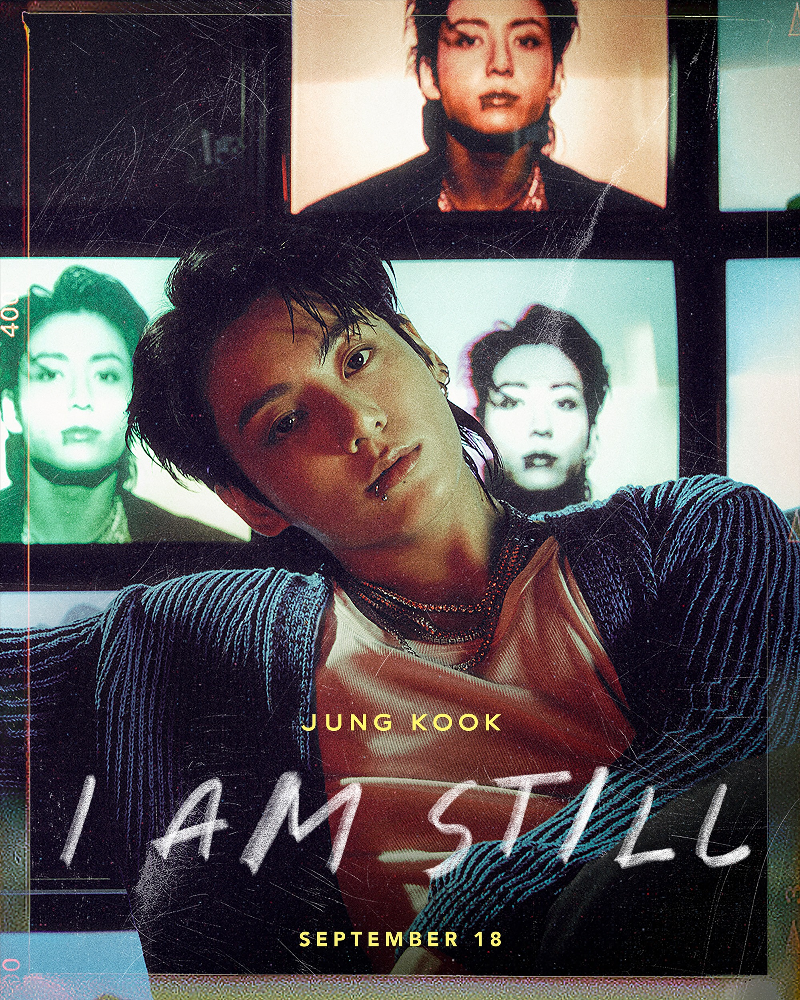

Transformers: O Início
TRANSFORMERS: O INÍCIO conta a história de origem de Optimus Prime e Megatron, os maiores rivais da franquia, mas que um dia foram amigos tão ligados quanto irmãos e que mudaram o destino de Cybertron para sempre. A dupla de protagonistas ganhará as vozes de Hemsworth (Thor) e Brian Tyree Henry (Godzilla e Kong: Novo Império, Atlanta). Além dos personagens principais, o elenco de dubladores no idioma original está repleto de vozes conhecidas do grande público como Scarlett Johansson, Jon Hamm, Keegan-Michael Key, Steve Buscemi e Laurence Fishburne.
Coringa
Loucura a Dois

Em Coringa 2, acompanhamos a sequência do longa sobre Arthur Fleck (Joaquin Phoenix), que trabalhava como palhaço para uma agência de talentos e precisou lidar desde sempre com seus problemas mentais. Vindo de uma origem familiar complicada, sua personalidade nada convencional o fez ser demitido do emprego, e, numa reação a essa e tantas outras infelicidades em sua vida, ele assumiu uma postura violenta - e se tornou o Coringa. A continuação se passa depois dos acontecimentos do filme de 2019, após ser iniciado um movimento popular contra a elite de Gotham City, revolução esta, que teve o Coringa como seu maior representante.
Jung Kook
I Am Still

O documentário 'JUNG KOOK: I AM STILL' acompanha o talentoso e ascendente artista Jung Kook em sua jornada de oito meses para se tornar uma 'estrela pop global' que cativou a cena musical mundial; e mergulha no amor sincero da estrela por seus fãs, o ARMY.
O Senhor dos Anéis
A Guerra dos Rohirrim

O Senhor dos Anéis: A Guerra de Rohirrim acompanha a história não contada por trás do famoso Abismo de Helm, a fortaleza icônica que ajudou na jornada de Aragon, Legolas e Gimli centenas de anos antes da fatídica Guerra dos Rohirrim, contando a vida e os tempos sangrentos de seu fundador, Helm Hammerhand, o rei histórico de Rohan. Um ataque repentino de Wulf, um inteligente e implacável senhor Dunlending, que está em busca de vingança pela morte de seu pai, força Helm e seu povo a fazer uma ousada última resistência na antiga fortaleza de Hornburg - que posteriormente será conhecida como o Abismo de Helm. Encontrando-se em uma situação cada vez mais desesperadora, Hera, a filha de Helm, deve liderar a resistência contra um inimigo mortal que pretende destruir a todos.